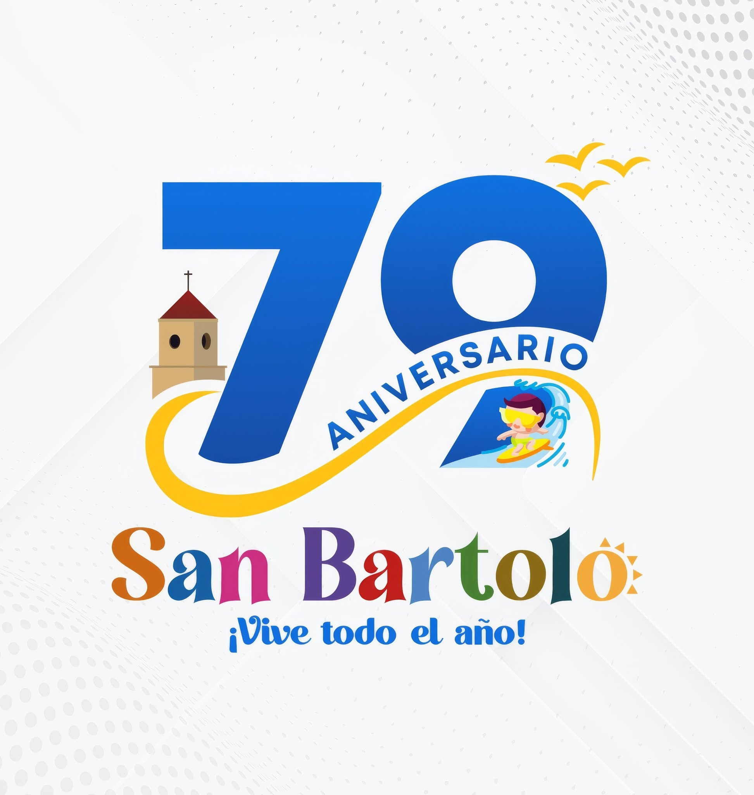

La Municipalidad Distrital de San Bartolo es un órgano de gobierno local de nivel distrital, promotor del desarrollo local sostenible, con personería jurídica de derecho público y con autonomía política, económica y administrativa en asuntos de su competencia.
La Municipalidad de San Bartolo trabaja con transparencia y vocación de servicio para construir un distrito moderno y sostenible. Nuestros ejes de acción priorizan la mejora de la infraestructura urbana, la seguridad ciudadana, la protección ambiental, el impulso al turismo y el desarrollo económico local, así como la modernización de los servicios municipales.
¡Hola! Soy el asistente virtual de la Municipalidad de San Bartolo.
¿En qué puedo ayudarte hoy?